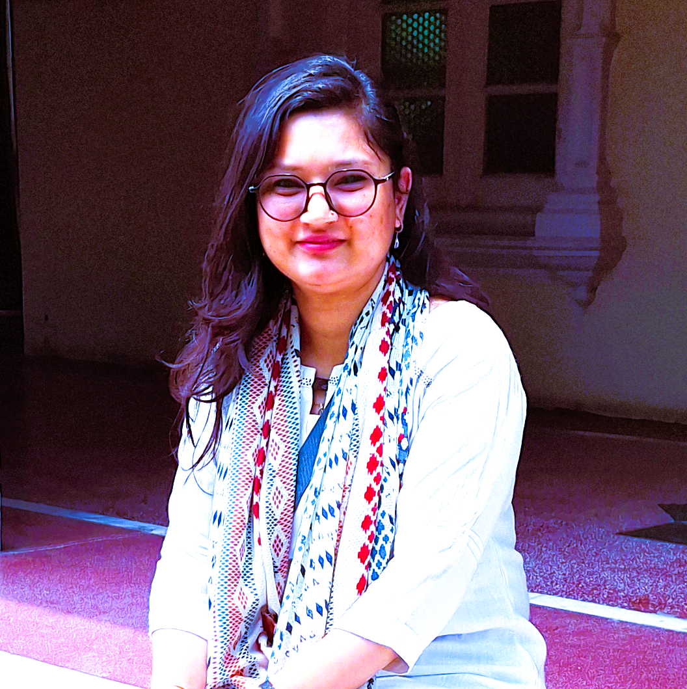

Research Associate at IIT Delhi| PhD from control and automation group at IIT Delhi
Research interests includes: Optimal Control; Multi-Agent Systems; Distributed and Networked Control; Constrained Control; Energy/Fuel and Time-Optimal Consensus; State Estimation. Currently a research associate at Indian Institute of Technology Delhi with research in Improved Bearings-only Target Motion Analysis (BO-TMA) Using AI Tools (IFCPAR funded).
Hello! I'm Akansha Rautela, currently a research associate at Indian Institute of Technology Delhi (IIT Delhi). I completed my PhD in the Department of Electrical Engineering at Indian Institute of Technology Delhi, under the supervision of Prof. Deepak U.Patil and Prof. Indra Narayana Kar. I am passionate about solving complex control problems through mathematical approaches and advancing the field of multi-agent systems.
My research focuses on computing optimal consensus controls for multi-agent systems under constraints such as energy and fuel limitations. I leverage algebraic geometry techniques (Gröbner basis based elimination methods) to develop a theoretical framework for solving consensus problem for set of N agents. With the interest in control theory and in distributed systems, I contribute to the academic community through publications, presentations at international conferences, and peer review activities.
Optimal Control • Multi-Agent Systems • Distributed Control • Gröbner Basis Methods
Published in top-tier journals and conferences; Active reviewer for IEEE and IFAC publications
Time-optimal and fuel-optimal control strategies for multi-agent systems with focus on constrained control problems and reachability analysis.
Design and analysis of distributed control algorithms for networked multi-agent systems with communication constraints.
Energy-optimal and time-optimal consensus protocols using algebraic geometry methods (Gröbner basis) and Set-Membership approaches.
IEEE Transactions on Automatic Control, 2026 (3rd revision)
Under Review65th IEEE Conference on Decision and Control (CDC), 2026 (Accepted)
Accepted23rd IFAC World Congress, Busan, Republic of Korea, August 2026 (Accepted)
AcceptedJoint IFAC Conference SSSC-TDS-COSY, Gif-sur-Yvette, France, July 2025
DOIJoint IFAC Conference SSSC-TDS-COSY, France, July 2025
26th International Symposium on Mathematical Theory of Networks and Systems (MTNS), University of Cambridge, UK, August 2024
International Conference on Sustainable Communication Networks and Application, Springer, 2019
DOIIndian Institute of Technology Delhi, New Delhi
September 2020 - July 2026
Thesis: Computation of Optimal Consensus in Multi-Agent Systems Using Gröbner Basis
Advisors: Prof. Deepak U. Patil and Prof. Indra Narayan Kar
National Institute of Technology Kurukshetra, Haryana
May 2019
Thesis: Line of Sight (LOS) Stabilization using Disturbance Observer (DOB)
Scholarship: MoE GATE Scholarship
College of Engineering Roorkee, Roorkee
May 2015
Indian Institute of Technology Delhi, New Delhi
Project: Improved Bearings-only Target Motion Analysis (BO-TMA) Using AI Tools (IFCPAR funded)
Analyzing target motion dynamics utilizing Set-Membership BO-TMA approaches to bound estimation errors under uncertainty. Combining classical control methodologies with modern computational techniques.
Indian Institute of Technology Delhi, New Delhi
Courses Taught:
• ELL333: Multivariable Control
• ELL705: Stochastic Filtering and Identification
• ELL225 & ELP225: Control Engineering (Theory & Lab)
• ELP101: Introduction to Electrical Engineering Lab
Graded assignments, guided students in laboratory experiments, and supported course delivery for over 500+ undergraduate and graduate students.
Defence Research and Development Organisation (IRDE), Dehradun
Designed and simulated a Disturbance Observer (DOB) in MATLAB/Simulink for Line of Sight (LOS) stabilization under external disturbances. Contributed to research on robust control strategies for defense applications.
23rd IFAC World Congress, Busan, Korea (August 2026)
65th IEEE Conference on Decision and Control, Honolulu, USA (2026)
Finalist - 23rd IFAC World Congress 2026
Selected for World Congress 2026
For M.Tech at NIT Kurukshetra
Ministry of Education Scholarship for PhD at IIT Delhi
I'm always interested in discussing research opportunities, collaborations, and new ideas in control systems and multi-agent systems.
II-402B, Department of Electrical Engineering
Indian Institute of Technology Delhi, India
+91-11-26591094
Department of Electrical Engineering
Indian Institute of Technology Delhi, India
+91-11-26591093
Department of Electrical Engineering
Indian Institute of Technology Delhi, India
+91-11-26591077
1031 Academic Block-I (Engineering) A1 - 323
Indian Institute of Technology Dharwad, India
+91-836-2309679